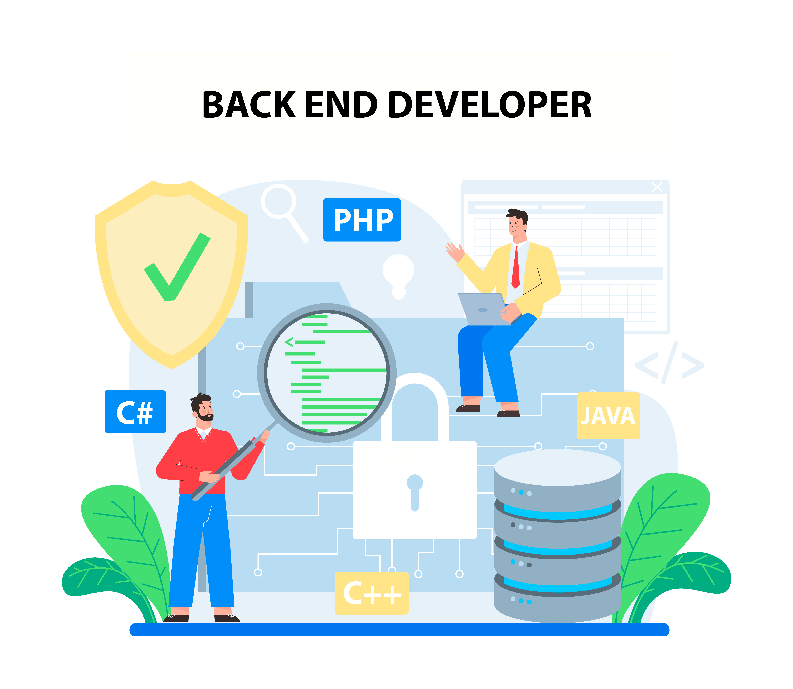

|  |
Le développement back-end correspond au développement côté serveur.Le développeur back-end représente le cœur d’un projet. Sans lui, aucune donnée ne transite. Il permet la bonne communication entre le front-end et la base de données.
Il doit savoir comment architecturer un projet, comprendre comment les serveurs fonctionnent et comment les monitorer ; enfin, il doit savoir utiliser et construire une API.